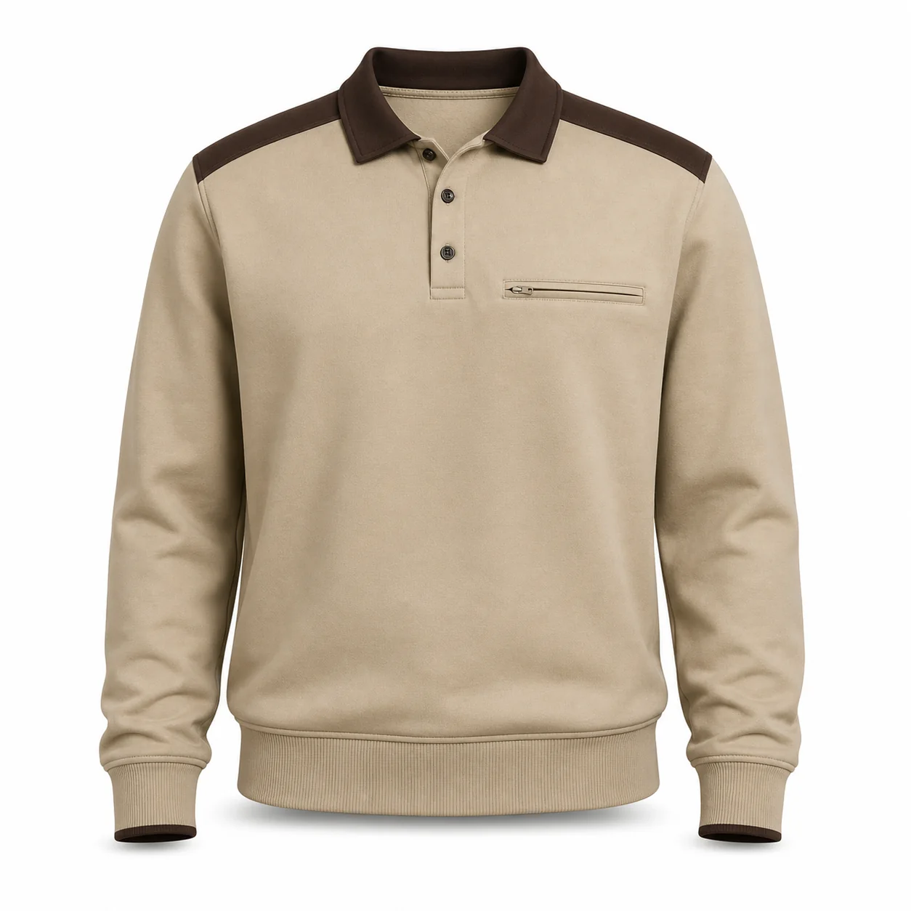

Bej Kahverengi Cepli Polo Yaka Sweatshirt
Bej sweatshirt kumaşını kahverengi polo yaka, omuz şeritleri ve düşük profilli fermuarlı göğüs cebiyle tamamlayan servis ve saha koordinasyon ekiplerine yönelik kurumsal modeldir.

Bej Kahverengi Cepli Polo Yaka Sweatshirt üretim ayrıntıları
Bej Kahverengi Cepli Polo Yaka Sweatshirt, kurumsal ekiplerde görev işlevi ve düzenli görünümü bir araya getirmek üzere planlanan İş sweatshirtleri modellerindendir. Bej | Kahverengi polo yaka ve omuz detayı | Üç düğmeli pat | Fermuarlı göğüs cebi | Ribanalı etek özellikleri modelin temel çerçevesini oluşturur.
Malzeme seçimi iki veya üç iplik örme kumaş üzerinden; çalışma ortamı, vardiya süresi, hareket ve bakım düzeni dikkate alınarak yapılır. Dikiş, cep ve kapama noktaları numunede kontrol edilir.
Logo ölçüsü ve konumu kumaş yüzeyiyle birlikte değerlendirilir. Onaylanan nakış veya baskı uygulaması model koduna bağlanarak tekrar sipariş standardı korunur.
Adet, beden dağılımı, renk, teslimat noktası ve hedef tarih yazılı paylaşıldığında kumaş ve üretim planı netleştirilir. Seri üretim yalnız onaylanan kapsam üzerinden ilerler.
Model özellikleri
- Bej
- Kahverengi polo yaka ve omuz detayı
- Üç düğmeli pat
- Fermuarlı göğüs cebi
- Ribanalı etek
Benzer ürünler
Saks Mavi Reflektörlü Polo Yaka Sweatshirt
KT-SW-016 kodlu kurumsal üretim modelini inceleyin.
Ürün detayına gidin →Beyaz Siyah Raglan Kollu Bisiklet Yaka Sweatshirt
KT-SW-024 kodlu kurumsal üretim modelini inceleyin.
Ürün detayına gidin →Siyah Gri Omuz Garnili Sweatshirt
KT-SW-025 kodlu kurumsal üretim modelini inceleyin.
Ürün detayına gidin →İlgili seçim ve bakım rehberleri
Sweatshirt İş Kıyafeti Rehberi
Kullanım, seçim ve bakım ayrıntılarını inceleyin.
Rehbere gidin →Üç İplik Kumaş Nedir? Özellikleri ve İş Kıyafetlerinde Kullanımı
Kullanım, seçim ve bakım ayrıntılarını inceleyin.
Rehbere gidin →Nakışlı İş Kıyafeti Nasıl Yıkanır?
Kullanım, seçim ve bakım ayrıntılarını inceleyin.
Rehbere gidin →Sık sorulan sorular
Minimum sipariş kaç adettir?
Bu modelde özel üretim minimum siparişi 50 adettir.
Logo uygulanabilir mi?
Kumaşa göre nakış, DTF, transfer veya serigrafi uygulanabilir.
Farklı renk üretilebilir mi?
Kumaş ve aksesuar uygunluğuna göre kurumsal renk planlanabilir.
Numune hazırlanabilir mi?
Proje kapsamına göre seri üretim öncesinde numune hazırlanabilir.
Beden dağılımı nasıl belirlenir?
Çalışan listesi ve numune kontrolüyle beden dağılımı yazılı onaya alınır.
Teklif için ne gerekir?
Adet, beden, renk, logo, teslimat şehri ve hedef tarih paylaşılmalıdır.
KT-SW-031 için teklif alın.
Ürün, adet, beden ve logo bilgilerinizi paylaşın.